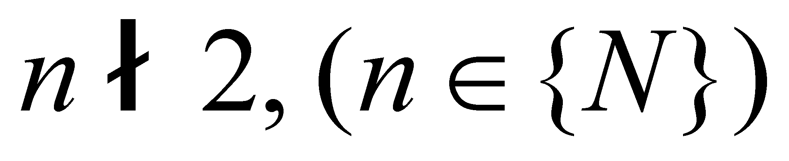
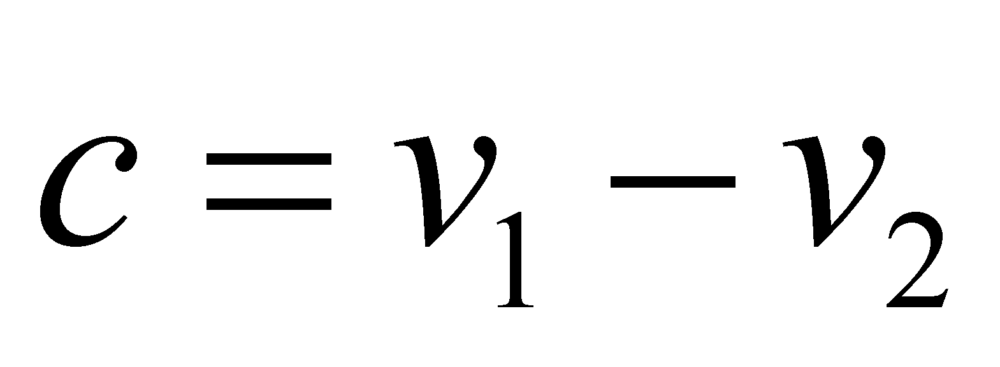

|
|
|
Although the notion of object was used so far, without focusing on its definition, but rather by considering its generally accepted meaning settled by dictionaries and encyclopedias, this chapter shall expose minutely the model used by the objectual philosophy for defining this notion. Further on, concepts such as property (attribute), process etc. shall be used, by taking into account their dictionary-settled meaning, up to their subsequent re-definition. The only explanation which we are giving once again (we also did it in the comment 2.2.1) is that according to this paper, an attribute has two components:
Qualitative component, represented by the name or the symbol of that property (a substitute for the property’s semantic value);
Quantitative component, also called in this paper the existential attribute, a number (scalar) which shows the extent (degree, proportion) of the existence of that property.
Within the relations from this paper, the two components are conjunctively associated, which means that they are able to exist only together (a null value for the existential attribute implies the non-existence of the associated qualitative property). The amount (value, quantity) of the existential attribute is given (as it shall be seen in chapter 8) by an information processing system (IPS), this process being one of the basic processes of information processing.
AXIOM I ( axiom of the quantitative value): Any value of an existential (quantitative) attribute is the result of a real or abstract variation process of that attribute against a reference value which is considered invariant. The zero value of this existential attribute means that the associated qualitative attribute does not exist. A zero-valued reference is an absolute reference, and the values assessed against this value are absolute values.
Comment 3.1.1: This axiom expands the definition of the amount of quantitative values interval (as the difference between its boundaries), with any other value of a quantitative attribute. The axiom I could be better understood by the reader after covering the chapter 4, in which the concept of process shall be defined and analyzed. In that chapter, we shall notice that any value of an attribute may be considered as a result of a variation against the reference value. If the reference value is null (absolute reference), the difference against it is even the one which, according to the usual language, is called value, amount etc. In this way, it is explicitly point out that any amount of a quantitative attribute is the result of at least one variation process (either real or abstract), ranging from its non-existence (null value) up to the value from that particular moment. Due to this axiom, a meaning for the density of a primary distribution element can be easily accepted (as a ratio of two numerical values) because those values are also differences (but against an absolute reference). If in case of an abstract reference (e.g.: a reference system from mathematics) the variation process is also abstract, when we are dealing with the material systems, the natural references (the ones which are self-settled between the system’s elements) are the result of real and natural processes. On the other hand, axiom I points out that any object, either real or abstract, can be considered as existent (existential attribute different from zero) only as a result of a process (generation), and an existing object cannot vanish (non-existence) without the occurrence of other process (annihilation, cancellation).
Definition 3.1.1: The systemic set is a set which contains elements.
Comment 3.1.2: Unlike the general term of set stipulated in mathematics, which allows the existence of a set with a single element or even with zero elements (void set), the objectual philosophy does not allow this kind of virtual constructions in case of the set of objects, because here, the singular object and the set of objects cannot be mixed up. When the system model shall be presented, either material or abstract, we shall see that a system must be made-up from a systemic set of elements. On the other hand, as it also may be noticed within annexes X.3 and X.4 of this paper, the sets, just like any other object, are limited (contained) by an abstract container; if this container is empty, we are dealing with the equivalent of a void set.
Definition 3.1.2: A set which does not comprise identical elements (duplicate) is called strict set.
Definition 3.1.3: The object is a finite and invariant strict set of qualitative attributes (properties), with finite and invariant, simultaneous distributions placed on the same finite and invariant support, which are assessed against a common inner reference system.
Definition 3.1.4: The composition of the set of distributed attributes, type of the support attribute, distributions type, size of the support domain and the inner reference system, all of them with a simultaneous existence, make-up the object’s model.
Definition 3.1.5: The model properties of an object are inner attributes, with their values established against the inner reference system.
Definition 3.1.6: The domain of the support attribute included within its boundaries is called the object’s inner domain.
Therefore, an object is mainly equivalent with a superposition (union) of distributions, all of them with the same support. The boundaries of the inner domain create two complementary domains within the total domain of the support attribute (basis of complementariness, see annex X.5), the object’s inner domain, and the object’s outer domain. According to definition 3.1.3, there is at least one assigned attribute into the inner domain, the distribution does not exist or is different on the outer domain. This value difference of the attribute distributed at the border between the inner and outer domain represents the basis of separation (discernement, discrimination) between the object and the outer domain.
Definition 3.1.7: The following property is called contrast:
 (3.1.1)
equal with the difference between the values v1 and v2 of the attribute distributed on two different support elements.
In case of the boundary separation, the two support elements are placed on both sides of the object’s boundary, but the definition is valid for any other two elements of a distribution. The contrast is a property which assign distinguishability feature to the objects, both as a singular object against the support domain not-occupied by the object, and both against other objects (in this case, the difference between the attributes allotted on the inner domains of the two objects). In case of an even distribution, the contrast between any other two elements is null. For the contrast existence, it must that at least one differential attribute (a property difference) to exist between two (or more) objects. It is worth mentioning that the values from the relation 3.1.1 can be both quantitative and qualitative values (semantic).
Comment 3.1.3: As we are about to see in chapter 8, the relation 3.1.1 represents an abstract comparison process; in case of the comparison between two numerical values (of the same qualitative attribute), the contrast is also a numerical value associated to the same qualitative attribute, while, if the two qualitative values are compared, the result can be nothing but identical (equal) or different. We shall see in chapter 8 and 9 that this attribute (contrast) is the differential information which allows us to separate (distinguish, differentiate) two objects, and if the inner contrast is null, this means that the information limit of the abstract object decomposability has been reached (the elementary object was reached). This is the reason why the even distributions are elementary distributions in relation to the objects, and the linear distributions (with even density) are also elementary distributions, but this time, in relation to the processes.
The differential attribute (contrast) between two objects would be able to exist only if at least one of the following conditions would be met:
Condition 3.1.a: The sets of distributed attributes must be different by means of at least one component;
Condition 3.1.b: The type of the support attribute must be different;
Condition 3.1.c: The distributions of the common attributes must be different in terms of quantity;
Condition 3.1.d: In case of the model identity of the simultaneously existing objects (the same support attribute, the same set of distributed attributes and the same inner distributions) the support domains of the two objects must be disjoint and at most, adjacent.
Definition 3.1.8: The disjoint domains are considered to be two or more domains of the same variable, whose intersection of the sets of singular values is void.
Definition 3.1.9: The adjacent domains are considered to be two disjoint domains with a common boundary.
According to the definition 3.1.3, it may be noticed that an object is characterized by six main properties (attributes), with a compulsory existence of each of them, which shall be called the set of existence criteria of an object or the set of general model properties:
P1 - Composition (structure) of the distributed attributes set;
P2 - Type of support attribute;
P3 - Distribution mode (distribution type) of each attribute from the set;
P4 - Size of the support attribute domain (against the inner reference);
P5 - Inner reference system;
P6 - Unique singular value of the temporal attribute associated to all the object’s elements (simultaneous existence criterion of these elements).
Comment 3.1.4: This unique singular value of the temporal attribute is assessed against a temporal reference, specific to IPS which certifies the object’s existence. In chapter 8, we shall see that the objects “exist” only for an IPS which is able to assess (certify) their existence, namely, to be able to perceive the distributions of the characteristic properties. Each IPS has its own (inner) distribution of the temporal attribute, distribution which might be however correlated (synchronized) with other outer temporal distributions.
Copyright © 2006-2011 Aurel Rusu. All rights reserved.